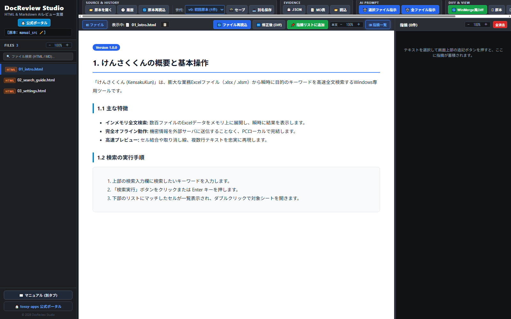
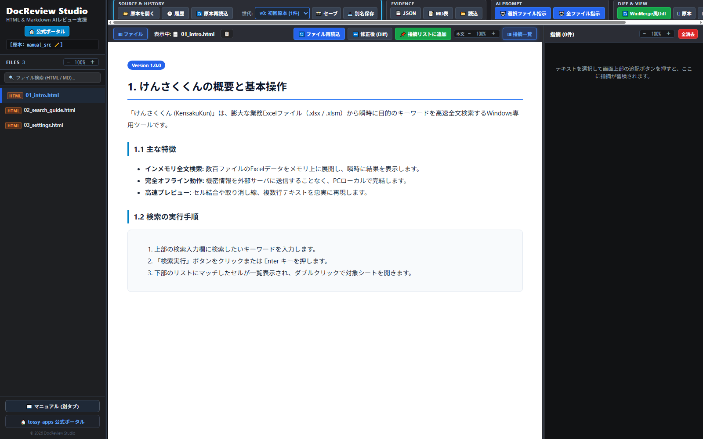
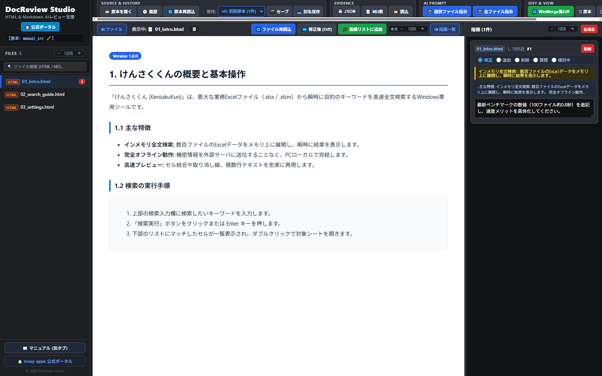
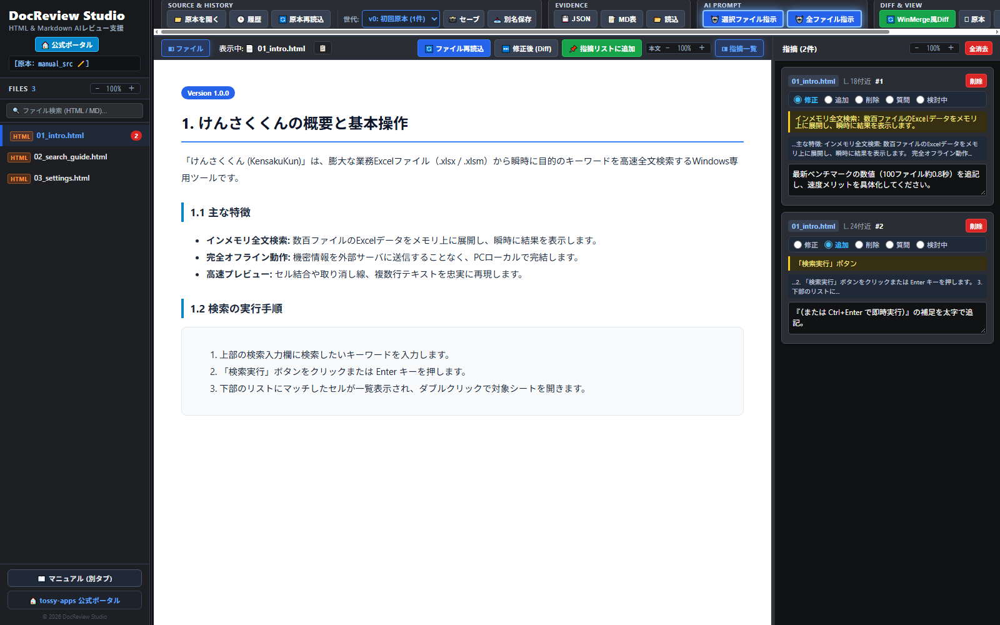
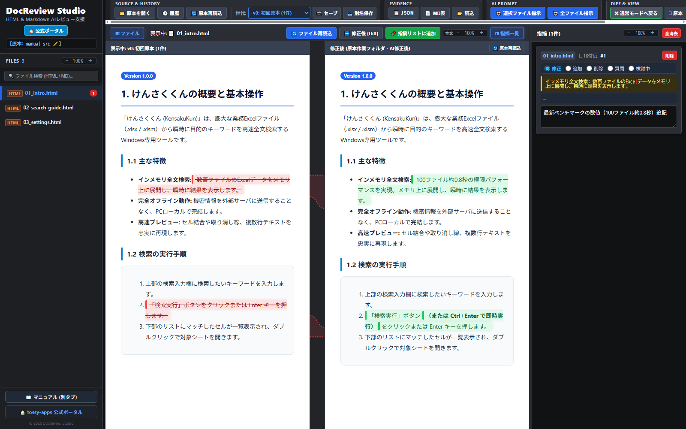
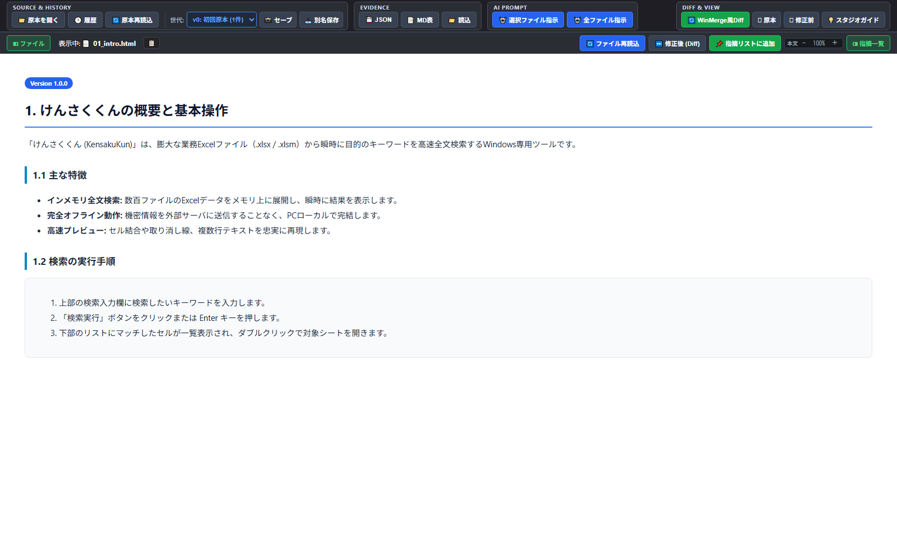

DocReview Studio ユーザーズマニュアル
DocReview Studio は、ブラウザ単体でローカルのHTMLマニュアルやMarkdownドキュメント（.md / .markdown）を読み込み、直感的なレビュー指摘の記録、AI修正指示プロンプトの一括自動生成、インライン差分ハイライト、およびWinMerge風の左右Diff差分検証を行える完全クライアントサイド型 AI協働ドキュメント校正スタジオです。
📑 目次
1. DocReview Studio の特徴・設計思想
2. 画面構成（UIレイアウトと3ペイン構造）
3. クイックスタート（3ステップで始める）
4. 基本レビュー手順（指摘の記録・画像指摘・エビデンス管理）
5. AIプロンプト連携（LLM指示の一括生成）
6. ビジュアルDiff検証機能（インライン差分ハイライト＆左右Diff比較）
7. 世代管理＆スナップショット機能（版管理・安全退避・別名保存）
8. 便利な操作・ショートカット・IDE拡張機能
1. DocReview Studio の特徴・設計思想

🤖 人間とAIが協働する「ドキュメント改修サイクル」
- 人間は「直感的に指摘するだけ」: 本文のテキストをドラッグ選択して指示を入力するだけで、LLM（Claude, Gemini, ChatGPT 等）が迷わず直接修正を実行できる高精度プロンプト（対象ファイル・概算行番号・対象テキスト・前後文脈・修正指示）を一括自動生成します。
- AI修正後の結果を「Diff検証で安全確認」: AIがファイルを書き換えた後は、ワンクリックで最新データを再読込。退避した修正前原本との差分ハイライト（インライン表示＆WinMerge風左右並列比較）により、「指示通りに修正されたか」「予期せぬ余計な崩れがないか」を目視で即座に検証できます。
🔒 サーバー通信ゼロ・完全ローカル完結
- File System Access API を採用し、PCローカルのフォルダやファイルをブラウザ内部メモリで直接読み込み・操作します。
- 社外秘のドキュメントや未公開マニュアル、個人情報が含まれる文書であっても、外部サーバーへ一切送信されません。
📝 HTML & Markdown（.md）の高速プレビュー
- HTMLファイルだけでなく、Markdownドキュメント（
.md / .markdown）も自動でGitHub風スタイル付きHTMLに高速変換してプレビュー表示・差分検証できます。
- オフラインでも動作するローカル内蔵パーサー（
marked.min.js）を同梱。
🚀 インストーラー不要・即座に起動
- Chromium系ブラウザ（Google Chrome、Microsoft Edge、Brave 等）があれば、インストール作業や環境構築なしで即座に利用可能です。
2. 画面構成（UIレイアウトと3ペイン構造）
DocReview Studio は、長時間のドキュメント校正作業を快適に行うための3ペイン構造を採用しています。
| エリア |
名称 |
主な役割 |
| ヘッダー |
コントロールバー |
原本フォルダ開く、履歴、世代管理（セーブ/別名保存）、エビデンス（JSON/MD）、AIプロンプト生成、Diff切替 |
| 左ペイン |
ファイルツリー |
作業フォルダ内のHTML/Markdown階層一覧（検索フィルタ・種別バッジ付・拡大縮小ウィジェット付） |
| 中央ペイン |
プレビュー / Diff検証 |
HTML/Markdown本文のレンダリング、インライン差分ハイライト、左右並列Diff比較 |
| 右ペイン |
指摘一覧（Evidence） |
選択テキスト、概算行番号、指摘区分、指示入力カードの一覧管理（拡大縮小ウィジェット付） |
💡 リサイズ自由自在: 各ペインの境界線（リサイザー）をマウスドラッグすることで、ファイルツリーや指摘一覧の幅を自由に調整できます。
3. クイックスタート（3ステップで始める）

STEP 1: 原本フォルダを開く
- ヘッダーの 「📁 原本を開く」 ボタンをクリックします。
- レビュー・校正対象のHTMLまたはMarkdownファイル群が含まれるローカルフォルダを選択し、アクセスを許可します。
- 左ペインにファイル一覧が読み込まれます（上部の検索ボックスで素早く絞り込み可能）。
- 過去に作業したフォルダがある場合は、「🕒 履歴」 ボタンからワンクリックで前回の作業状態を再開することもできます。
STEP 2: レビュー対象のファイルを選択（初回原本が自動保護）
- 左ペインのファイルツリーからレビューしたいファイルをクリックします。
- 中央ペインにプレビューが表示されると同時に、開いたファイルの初期状態（修正前）が自動的に 「v0: 初回原本」 として内部で安全に記録されます。
- これによって、面倒な事前バックアップを行わなくても、AI修正後に即座に差分検証を行えます。
STEP 3: テキストを選択して指摘を追加
- 本文プレビュー上で気になる文言をドラッグ選択し、ツールバーの 「📌 指摘リストに追加」 を押します。
- 右ペインの指摘カードに指示（例:「〜に修正」「誤字を訂正」など）を入力します。
4. 基本レビュー手順（指摘の記録・画像指摘・エビデンス管理）

1. テキスト選択からの指摘追加
- 中央のプレビュー画面で、修正・指摘したいテキストをマウスでドラッグ選択します。
- 選択部分のすぐ上に表示される 「📌 指摘に追加」 フローティングボタン、またはツールバーの 「📌 指摘リストに追加」 をクリックします。
- 右ペインに新しい指摘カードが自動生成され、入力欄にフォーカスが当たります。
2. 画像・図表のレビュー（右クリックで一発追加）
- 画像クリック: 本文中の画像をクリックすると、画像右上に「📌 指摘に追加」ボタンが出現します。
- 画像右クリック: 画像を右クリックすると、ツール側が即座に捕捉し、画像のファイル名・キャプション（図見出し）・親セクション見出しを自動抽出して指摘カードを即時作成します。
3. ファイル全体・全般に対する指摘
特定の1行ではなくファイル全体に対する要望（例:「全体的にトーン＆マナーを統一」「SEOキーワードを各見出しに反映」等）を追加したい場合：
- 中央ツールバーの 「表示中: 📄 [ファイル名]」 ラベルをクリックする。
- または、本文テキストを未選択の状態で 「📌 指摘リストに追加」 ボタンを押す。
4. 指摘カードの編集
各指摘カードには以下の情報が自動記録・設定されます：
- 対象ファイル & 概算行番号: 原本内のテキスト出現位置から
L.24付近 のように概算行を自動算出。
- 指摘区分（ラジオボタン）:
修正 / 追加 / 削除 / 質問 / 検討中 から選択。
- 対象テキスト（黄色ハイライト枠）: クリックすると本文プレビューの該当箇所へ自動スクロール＆点滅ハイライトします。
- 文脈（コンテキスト）: 対象テキストの前後文脈を自動抽出。
- 指示入力（テキストエリア）: AIや執筆者に伝えたい具体的な指示内容を入力します。
5. エビデンスのエクスポート・復元
ヘッダーの Evidence グループからレビュー結果を保存・共有できます。
- 💾 JSON: 指摘データ構造を完全保持したJSONファイルを出力。
- 📝 MD表: GitHub Issueやレビュー報告書にそのまま貼り付け可能なMarkdownテーブル形式で出力。
- 📂 読込: 以前保存したJSONファイルを読み込み、指摘カード群を完全復元。
5. AIプロンプト連携（LLM指示の一括生成）

蓄積した指摘データから、LLM（Claude, Gemini, ChatGPT 等）がそのまま解釈して正確にコード修正できる形式のプロンプトを一括生成します。
指示プロンプトのコピー方法
- 🤖 選択ファイル指示: 現在中央ペインに表示しているファイルに関する指摘のみを整形してクリップボードにコピー。
- 🤖 全ファイル指示: プロジェクト全体の全ファイルにまたがるすべての指摘を合算してクリップボードにコピー。
生成されるプロンプト形式例
【対象ファイル: 01_intro.html】
以下の指定箇所について、対象ファイルのみを直接編集して指摘内容を反映してください。
【厳守ルール】
1. 完全単一ファイル完結: 外部Web検索や他ファイルの走査・grepは一切行わないこと。
2. リンク先・外部構造の不問: HTML内のリンク先（href等）や参照先の存在・整合性は一切意識・検証せず、対象テキストのみをシンプルに検索・置換すること。
3. 構造・識別子の保護: 既存のHTMLタグ、属性値、クラス名、およびコード・メソッド等の英語識別子は維持し、指示のない前後の文言は変更しないこと。
========================================
[指摘 #1] 【修正】
対象ファイル: 01_intro.html (L.18付近)
対象テキスト:
"インメモリ全文検索: 数百ファイルのExcelデータをメモリ上に展開し、瞬時に結果を表示します。"
周辺文脈:
"...主な特徴: インメモリ全文検索: 数百ファイルのExcelデータをメモリ上に展開し、瞬時に結果を表示します。 完全オフライン動作..."
指示内容:
最新ベンチマークの数値（100ファイル約0.8秒）を追記し、速度メリットを具体化してください。
6. ビジュアルDiff検証機能（インライン差分ハイライト＆左右Diff比較）

AIやエディタによる修正が完了したら、2つの方法で直感的に変更差分を目視検証できます。
1. インライン差分ハイライト（推奨）
- 中央ツールバーの 「⏭️ 修正後 (Diff)」 ボタンを押すと、画面を切り替えることなく、現在表示している本文プレビュー内に修正・追加されたテキストが直接グリーンでハイライトされます。
- 再度クリックすると 「⏮️ 修正前 (原本)」 に切り替わり、編集前と編集後を瞬時に交互確認できます。
2. WinMerge風 左右ブロック差分検証
- ヘッダーの 「🔄 WinMerge風Diff」 ボタンを押すと、画面が左右2分割モードに切り替わります。
- 左ペイン: 修正前（退避フォルダまたは初回原本 v0）
- 右ペイン: 修正後（作業フォルダの最新データ）
- 中央 Canvas ブリッジライン: 左右の対応する差分ブロック間を流れるような美しい結線で繋ぎ、変更箇所を一目で把握できます。
- スクロール自動同期: 片方をスクロールすると、もう一方も対応位置へ追従します。
3. 高精度なHTMLトークン字句解析エンジン
- 内部エンジンに Google
diff-match-patch を採用。
- 単なる文字列比較ではなく、HTMLの開始タグ・終了タグとテキストを字句解析（トークン化）して差分を割り出すため、タグ構造を壊しにくく、無関係な見出しや無関係な要素の誤着色を大幅に抑えます。
4. 🔄 高速再読込ボタン
- 🔄 ファイル再読込（中央ツールバー）: 現在開いているファイルのみをディスクから高速再読込（フォルダ全体の再走査を待たずに素早く反映）。
- 🔄 原本再読込（ヘッダー）: フォルダ全体の最新変更を再スキャン。
7. 世代管理＆スナップショット機能（版管理・安全退避・別名保存）
DocReview Studio では、Gitなどのバージョン管理ツールを開くことなく、ブラウザ上で直感的な版管理（世代管理）が行えます。
世代の仕組み
- v0: 初回原本: ファイルを開いた時点の純粋な原本データ。自動的に保護され、いつでも差分の基準点にできます。
- 📸 セーブ（スナップショット）: AIに一連の修正を行わせた後、納得がいった段階で「📸 セーブ」を押すと、その状態が「v1」「v2」として新しい版に固定されます。
- 最新（作業中）: 現在リアルタイムにディスク上で編集している作業ファイル。
- 世代セレクタ: ツールバーのプルダウンから過去の世代を選択し、どの版を比較基準にするかをいつでも切り替えられます。
- 📥 別名保存: 選択中の世代ファイルを安全に別名（例:
index_v0_snapshot.html）でエクスポート可能。
8. 便利な操作・ショートカット・IDE拡張機能

⌨️ キーボードショートカット
| ショートカット |
機能 |
Alt + 1 |
左ペイン（ファイルツリー）の表示 / 非表示トグル |
Alt + 2 |
右ペイン（指摘一覧）の表示 / 非表示トグル |
Ctrl + ホイール (または Alt + ホイール) |
カーソルが乗っているペイン（左/中/右）を個別に拡大縮小 |
Ctrl + 0 (または 中クリック) |
各ペインのズーム倍率を 100% にリセット |
🔍 ペイン別独立ズーム機能
左（ファイルツリー）、中央（本文）、右（指摘一覧）のヘッダーにそれぞれ ズームウィジェット（− 100% ＋） を搭載。
- 文字の小さなマニュアルは本文だけを拡大表示し、ファイルツリーは小さく保つなど、作業領域ごとに最適な文字サイズに調整できます。
- 画面上部（ヘッダー・ツールバー）ではChrome標準の全体ブラウザズームと完全に両立しています。
🖥️ マルチディスプレイ向け「独立別窓」表示
- 「🪟 原本」: 現在選択中の原本作業中HTMLを別ウィンドウで大きく表示。
- 「🪟 修正前」: 修正前原本を独立ウィンドウで表示。
- マルチモニター環境で「左画面に原本」「右画面に修正後」を最大化して並べる用途に最適です。